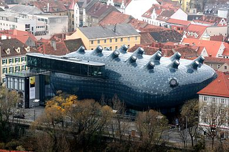
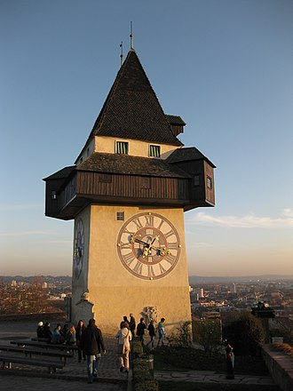
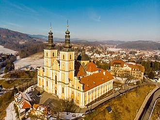

Staunen, Begeisterung, Ungläubigkeit. Die spektakuläre Architektur des Kunsthauses Graz lässt niemanden kalt. Das gibt es nicht häufig, dass das Nebeneinander traditioneller Stadtstruktur und atemberaubend junger Architektur so perfekt gelungen ist wie bei der Umsetzung dieses Museums für zeitgenössische Kunst in Graz. Wie eine geheimnisvolle blaue Blase schwebt das Kunsthaus zwischen den Dächern der Altstadt – das Begriffspaar Graz und Kunsthaus zieht Besucher einfach magisch an.
Manchmal werden Träume wahr. So auch 2003 der Traum der Grazer von einem Kunsthaus. Der Bauplatz war geschickt gewählt. Das rechte Murufer, der bisher stets etwas vernachlässigte Teil der Stadt. Die Nachbarschaft: das Eiserne Haus, eine fast vergessene, weil kaum mehr sichtbare, einst kühne Gusseisenkonstruktion des Grazer Architekten Josef Benedict Withalm aus dem Jahr 1848.
Den europaweiten Wettbewerb zu Revitalisierung des Eisernen Hauses und Anbau eines Kunsthauses gewannen die britischen Architekten Peter Cook und Colin Fournier. Das biomorphe Gebilde hebt sich in Form und Material bewusst von den Giebelhäusern mit ihren roten Ziegeldächern ab und schmiegt sich doch ehrfurchtsvoll an Altes an.
1.066 Acrylglaselemente bilden die Außenhaut des Friendly Alien. Über die Mur sendet er abends bewegte Lichtsignale oder Schriften von seiner BIX-Fassade. Tageslicht saugt er aus dem Norden durch die nüsternartigen Nozzles an seiner Oberseite. Needle heißt die gläserne Aussichtsplattform, die sich im Osten über Kunsthaus und Eisernes Haus spannt. Im Inneren des Eisernen Hauses finden sich Shop, das Kunsthaus Café, Administration und die Camera Austria - eine Institution, die sich mit Ausstellungen und der gleichnamigen Zeitschrift der Fotografie verschrieben hat.
Der transparente Unterbau des Kunsthauses beherbergt eine Medienlounge. Der Travelator, ein geneigtes Förderband, zieht die Besucher in das Innere des Alien. Dieses gibt sich recht anpassungsfähig, lässt Gestaltern Freiraum für verschiedenste Ausstellungen auf zwei Etagen. Auch wenn sich das Kunsthaus den Luxus leistet, ausschließlich Kunst aus den letzten vier Jahrzehnten zu zeigen.

Ein Turm an dieser Stelle des Berges wird bereits im 13. Jahrhundert erwähnt. Im Zuge der Neubefestigung des Schlossbergs ab der Mitte des 16. Jahrhunderts erhielt der Turm sein heutiges Aussehen.
Die Zeiger auf den mächtigen Zifferblättern sorgen häufig für Verwirrung. Gehen in Graz die Uhren anders? Nein. Die Tatsache, dass es ursprünglich nur weithin sichtbare große Zeiger für die Stunden gab und jene für die Minuten erst später dazukamen, hatte eine Vertauschung der Zeiger zur Folge. Das Uhrwerk, das Michael Sylvester Funck im Jahre 1712 baute, funktioniert noch heute, wird aber seit Mitte des 20. Jahrhunderts elektrisch betrieben.
Bei Bränden in der Stadt läutete die Feuerwache am Uhrturm die Feuerglocke. Sie ist eine der drei noch erhaltenen Glocken des Turmes (1645). Die 1382 gegossene nunmehr älteste Glocke in Graz schlägt die Stunden.
Die "Armesünderglocke" (um 1450) wurde bei Hinrichtungen geläutet. In späterer Zeit mahnte sie Nachtschwärmer an die Sperrstunde, was ihr auch den Beinamen "Lumpenglocke" einbrachte.
An drei Ecken des Turmes sind Wappen angebracht, die einst Befestigungswerke des Schlossbergs schmückten:
der Steirische Panther mit dem Herzogshut der Steiermark (um 1570)
der einköpfige Adler als Wappen des späteren Kaisers Ferdinand I. (1552)
sowie der Doppeladler mit den Initialen Maria Theresias (2. H. 18. Jhdt.).
Die mächtige Bürgerbastei, auf der der Uhrturm steht, musste - wie ihr Name sagt - in Kriegszeiten von den Grazer Bürgern verteidigt werden. Heute befindet sich auf ihr ein prächtiger Garten mit Blumen, teils sehr südländischen Pflanzen und zahlreichen Bänken. Zum Verweilen und zum Genießen des Ausblicks auf die Stadt und darüber hinaus.

Die Burg wurde im 11. Jahrhundert erbaut; eine erste Erwähnung ist aus dem Jahr 1042 bekannt. 1042 schenkte Kaiser Heinrich III. dem Markgrafen Gottfried aus dem Geschlecht der Wels-Lambacher zwei Königshuben Land um das Gebiet der Burg. 1050 vererbte Gottfried Gösting an seinen Bruder Adalbero von Würzburg. Während des Investiturstreits dürfte die Burg in den Besitz der Eppensteiner gelangt sein. Als 1122 der Herzog Heinrich III. starb, ging sie an die Traungauer. Von dieser Zeit bis ins 17. Jahrhundert war die Burg immer im Eigentum der Landesfürsten und wurde von Burggrafen, Verwaltern, Pächtern und Pfandinhabern betreut.
Sie wurde bis ins 15. Jahrhundert ständig erweitert. Im 15. Jahrhundert wurde die kleine Burg zu einer Festung ausgebaut, um Schutz gegen die Bedrohung der Türken und Ungarn zu bieten. Sie war Teil des Kreidfeuer-Warnsystems, das die Bevölkerung vor Bedrohungen warnen sollte. 1707 wurden Burg und Herrschaft von den Grafen von Attems erworben.
Am 10. Juli 1723 schlug ein Blitz in die Burg ein, wo sich das Pulverlager der Stadt Graz befand. Ein Großteil der Bausubstanz fiel den Flammen zum Opfer. Die Burg wurde in der Folge nicht mehr aufgebaut. Als Ersatz wurde 1728 am Fuße des Burgberges das barocke Schloss Gösting als neuer Familiensitz der Attems fertiggestellt. Ab 1790 begann ein rascher Verfall der Mauerreste der Burg. Anno 1843/44 brachen Arbeiter die Nordwand des großen Palas ab, um Steine als Baumaterial für den Eisenbahnbau zu gewinnen. 1874 stürzte der südöstliche Teil des Bergfrieds ein.
Die Ruine wird von dem 1925 gegründeten Burgverein Gösting betreut. Seit dieser Zeit gibt es Sicherungs- und Wiederherstellungsarbeiten. 1999 erwarb die Bäckerfamilie Hubert Auer die Ruine und die umliegenden Wälder. Als Anfang Juli 2020 die Betreiberin der Gaststätte im Inneren der Burg den Betrieb aus gesundheitlichen Gründen schloss, wurde auch das Burgareal als Privatgrund für den Zugang durch Besucher gesperrt. Im Jänner 2021 musste der Spazierweg der um die Ruine herum führt gesperrt werden, da sich Steine aus einer der Außenmauern gelöst hatten und ein Mauerteil einzustürzen drohte.

Am Ostrand von Graz thront auf einem Hügel die doppeltürmige Wallfahrtskirche. Ab 1714 wurde sie vermutlich von den Architekten Andreas und Johann Georg Stengg im Auftrag des Pauliner-Ordens errichtet. Ihr Herzstück bildet eine Marienstatue, deren weithin erzählte Wundertaten schon im 17. Jahrhundert zahlreiche Pilger anlockten.
Über 200 Stufen führen steil hinauf auf den Purberg zum bedeutendsten Marienheiligtum in Graz - der Wallfahrtskirche Mariatrost. Eine geschwungene Barockfassade und zwei mächtige Türme eingespannt in die Seitenflügel eines Klosterbaus, in dem - mit Unterbrechungen - bis zum Jahr 1996 Mönche lebten.
Durch eine Kuppel dringt das Himmelslicht in das Kircheninnere und erhellt auch den Hochalter mit der spätgotischen Marienstatue. Deren Bekleidung stammt aus der Barockzeit. Ebenso wie der Altar selbst. Der graue Marmor wurde direkt am Purberg gebrochen. Die Seitenaltäre mit eindrucksvollen Einlegearbeiten aus Marmor stifteten steirische Adelsfamilien.
Den Innenraum prägen vor allem die Fresken von Lukas von Schram und Johann Baptist Scheidt. In ihnen wird Maria verherrlicht, auch als "Helferin zum Sieg". Wie eine Szene aus der siegreichen Schlacht von Lepanto gegen die Türken beweist.
Von der Ausstattung beeindruckt besonders die Kanzel. Sie wurde 1779 von Veit Königer geschaffen. Die höchste Figur am Schalldeckel symbolisiert den Glauben. Ausdrucksstarke Gestalten heben hilfesuchend die Hände zu ihm, zum Kreuz empor. Am Korb der Kanzel vervollständigen die Hoffnung mit dem Anker und die Liebe mit dem Herz die drei christlichen Tugenden.
Im Jahr 1999 wurde die Wallfahrtskirche Mariatrost von Papst Johannes Paul II. in den Rang einer Basilika erhoben.